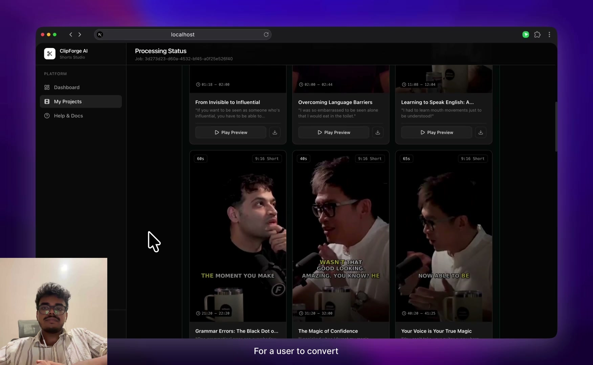
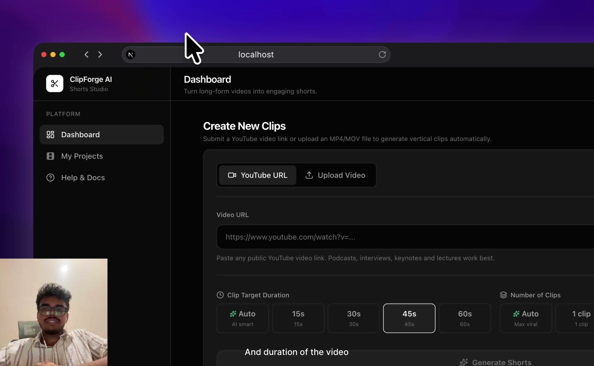

Turn Long YouTube Videos
into Viral Shorts in Minutes.
Drop a YouTube link or podcast, and Clipper AI automatically finds the best moments, turns them into vertical shorts (9:16), adds captions, and gets them ready for TikTok, Instagram, and YouTube.
Find Key Moments
AI detects the most engaging highlights automatically.
Auto Reframe (9:16)
Keeps the speaker in focus for Shorts & Reels.
Animated Captions
Adds styled, ready-to-post captions instantly.
How it works in 3 easy steps
No video editing experience or complex timelines required.
Paste Video Link
Drop in any YouTube link, podcast URL, or upload a video file. Clipper AI takes care of the rest automatically.
AI Analyzes & Cuts
The AI listens to the full episode, identifies the most engaging hooks, tracks the speaker’s face, and frames the shot for mobile.
Download & Publish
Download Full HD (1080x1920) vertical MP4 files with styled captions, ready to upload directly to TikTok, Reels, and Shorts.
Live Demo
Watch a full 1-hour interview get reframed into ready-to-publish vertical clips with speaker centering and animated captions.
Never lose the speaker off-screen
Manual video editors spend hours keyframing video crops. Clipper AI detects faces and automatically centers the active speaker.
Standard video tools simply crop the center 33% of the screen. If the person talking is sitting on the side, they get cut right in half.
Clipper AI tracks facial landmarks in real time and smoothly follows whichever person is speaking, keeping them perfectly framed for TikTok and Reels.
Real Generated Vertical Shorts
Exported in 1080x1920 with speaker tracking and burned captions.

Specific Knowledge vs Status Games
"Arm yourself with specific knowledge. If society can train you, it can train someone else and replace you."

Productize Yourself & Own Equity
"You are not going to get rich renting out your time. You must own equity, a piece of a business."
Everything you need to grow on short-form
Save 10+ Hours Every Week
Stop scrubbing through 2-hour podcast recordings manually. Clipper AI pinpoints the best moments in seconds.
Crystal-Clear 1080p Export
Output files are rendered at Full HD 1080x1920 (60fps) with pristine audio and crystal-clear text readability.
Platform-Safe Subtitles
Captions are placed specifically so they are never covered up by TikTok, Reels, or Shorts like, share, and comment buttons.
Built on Modern Open Source Infrastructure
git clone https://github.com/subhajitorrin/clipper.git && cd clipper && docker compose up --build